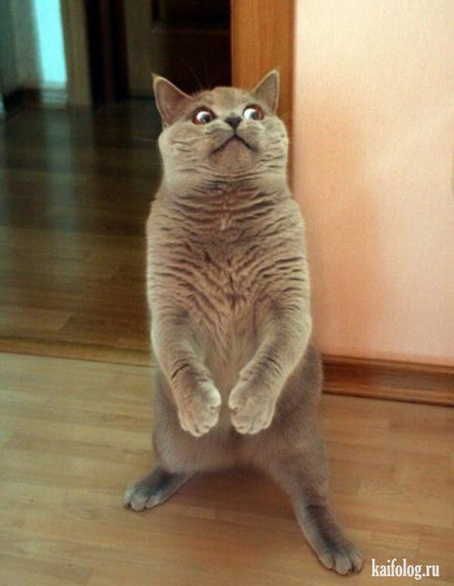

Влади́мир Влади́мирович Пу́тин (род. 7 октября 1952, Ленинград, СССР) — российский государственный и политический деятель, бывший офицер КГБ СССР. Президент Российской Федерации с 7 мая 2012 года; ранее занимал эту должность в 2000—2008 годах, а с 31 декабря 1999 по 7 мая 2000 года исполнял обязанности президента. В 1999—2000 и 2008—2012 годах был председателем правительства Российской Федерации. Таким образом, с 1999 года последовательно занимает должности главы правительства или главы государства. В мае 2024 года вступил в пятый президентский срок[7]. Принятые в 2020 году поправки к Конституции позволили ему участвовать ещё в двух президентских выборах после истечения прежнего срока полномочий[8].